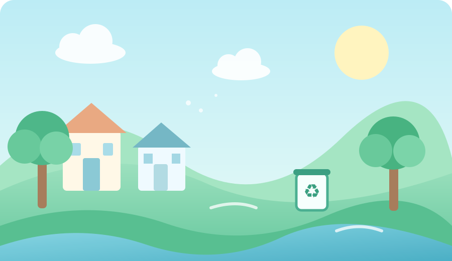

Protege a natureza
O descarte correto ajuda a evitar que resíduos cheguem aos rios, bueiros e áreas verdes.
Uma cidade bem cuidada é mais agradável, saudável e segura para todos.
O descarte correto ajuda a evitar que resíduos cheguem aos rios, bueiros e áreas verdes.
Ambientes limpos ajudam a reduzir focos de sujeira e a presença de animais transmissores de doenças.
Praças e ruas cuidadas ficam mais convidativas para passear, brincar e encontrar pessoas.
Não é preciso fazer algo gigante para começar a transformar o lugar onde vivemos.

NOSSA CIDADE, NOSSO CUIDADONão jogue papéis, embalagens ou restos de comida nas ruas.
Quando possível, separe recicláveis, orgânicos e rejeitos.
Cuide de praças, jardins, calçadas e equipamentos coletivos.
Converse com amigos e familiares sobre descarte responsável.
Separar os materiais facilita a coleta e pode permitir que muitos deles voltem para a cadeia produtiva.
| Tipo | Exemplos | O que fazer |
|---|---|---|
| Recicláveis | Papel, papelão, plástico, metal e vidro | Mantenha limpos e secos e encaminhe à coleta seletiva, quando disponível. |
| Orgânicos | Cascas de frutas, restos de verduras e folhas | Podem ser destinados à compostagem, se houver estrutura adequada. |
| Rejeitos | Papel higiênico e materiais sem possibilidade local de reciclagem | Descarte conforme a coleta comum do seu município. |
A coleta seletiva e as regras de descarte podem variar de uma cidade para outra. Consulte os serviços municipais da sua região.
Uma mensagem para inspirar o cuidado com os espaços que compartilhamos.
Uma mensagem visual sobre cuidado com a cidade.
Vídeo educativo curto: atitudes simples para cuidar dos espaços públicos.
Antes de descartar algo, pense: existe um lugar correto para isso?
Mensagem narrada sobre descarte correto e cuidado coletivo.
Converse com sua comunidade, respeite os dias de coleta e participe de campanhas e ações locais de cuidado com o bairro.
Comece com uma atitude hoje. Inspire outras pessoas a fazer o mesmo.
Voltar ao menu principal ↑